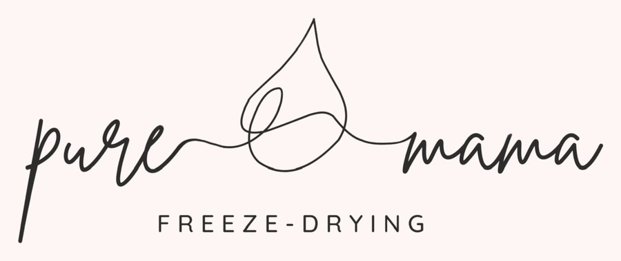
Breast Milk Freeze-Drying in Utah County
Turn your frozen breast milk into a shelf-stable powder that keeps for years, with no freezer space needed. Bring your milk to Sophia's home in Spanish Fork and pick up your powder there when it's ready. Moms come from Provo, Orem, Springville, Payson, Lehi and all over Utah County.
- 5-star reviews
- Drop-off & pickup at Sophia's home
- Shelf-stable up to 3 years
See How It Works on Instagram
Behind the scenes and freeze-drying tips from @puremamafd. Tap a reel to watch it on Instagram.
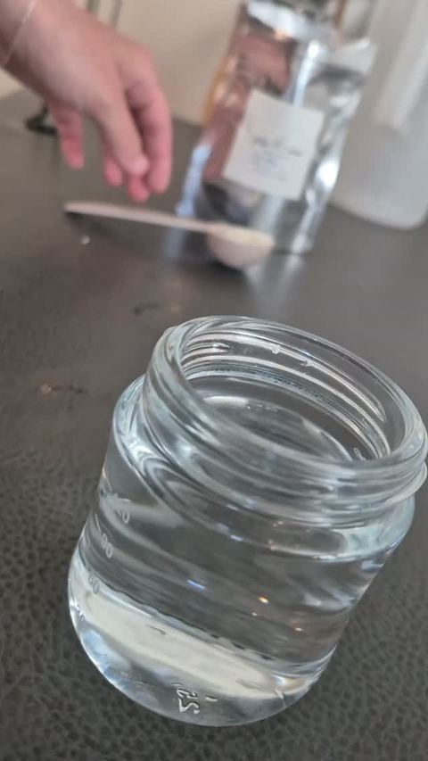
Mixing the powder back into milk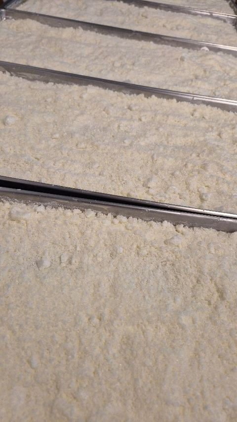
Fresh off the freeze dryer trays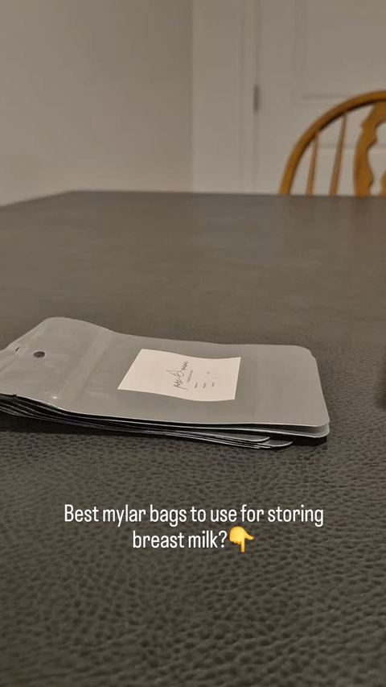
Best mylar bags for storing breast milk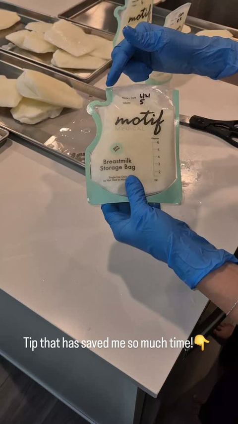
A tip that saves so much time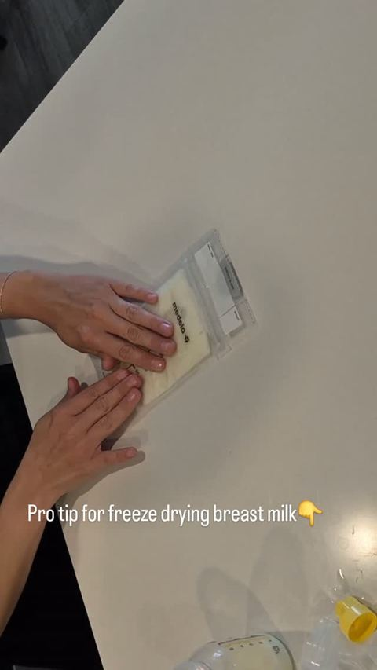
Pro tip for freeze-drying breast milk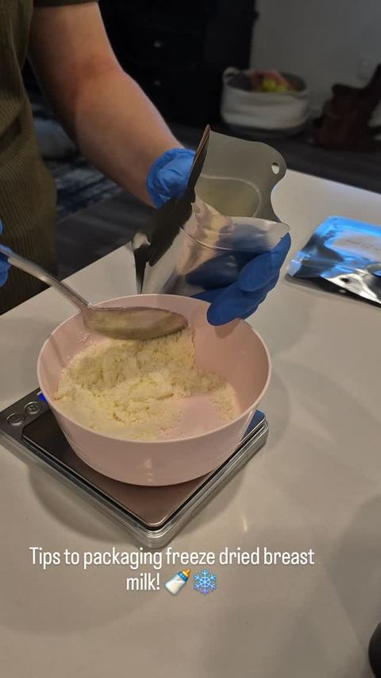
Packaging freeze-dried breast milk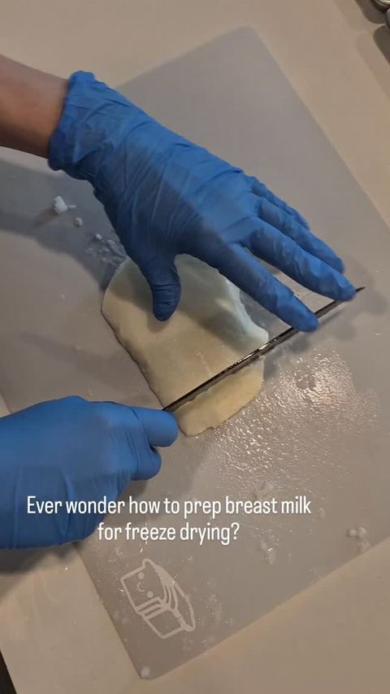
How to prep breast milk for freeze-drying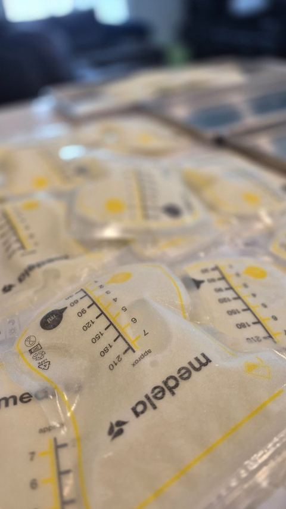
Milk bags ready for the freeze dryer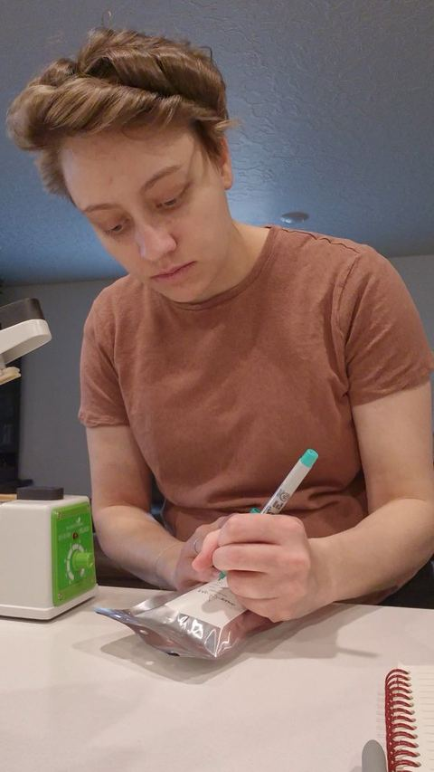
Every order labeled by handHow Breast Milk Freeze-Drying Works
Everything happens at Sophia's home in Spanish Fork. You drop off, and you pick up.
-
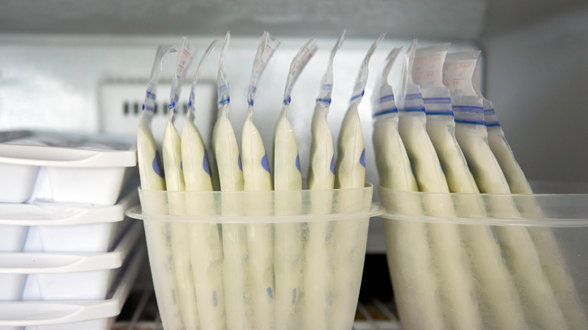
1Pump and freeze your milk.
-
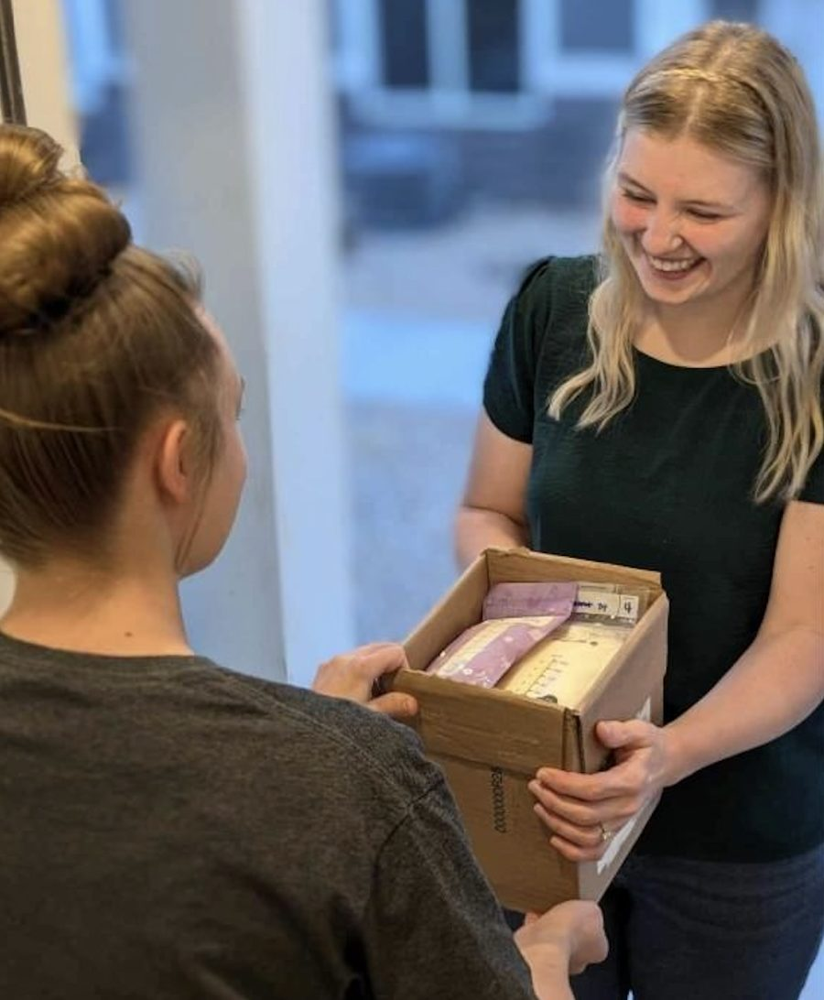
2Bring your frozen milk to Sophia's home in Spanish Fork at your scheduled time.
-
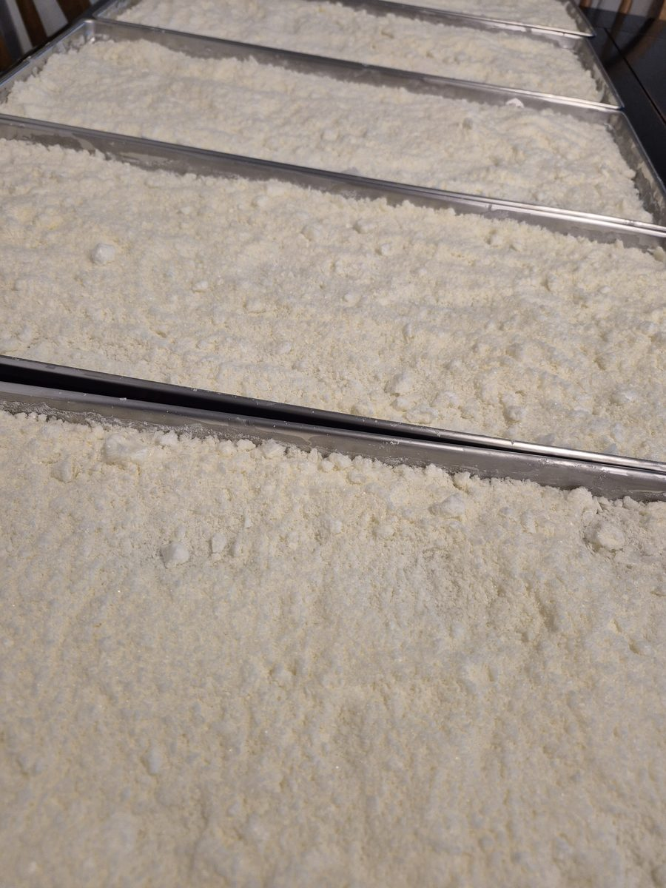
3Your milk is freeze-dried and crushed into a powder.
-
4
Come back to Sophia's home to pick up your powder. Just add the right amount of water to use it.
Breast Milk Freeze-Drying Pricing
Bulk discount: the more milk you bring, the less you pay per ounce.
| Total milk | Per ounce |
|---|---|
| Up to 150 oz | $1.00 |
| 150 – 450 oz | $0.85 |
| 450 – 850 oz | $0.80 |
| 850 – 1,150 oz | $0.75 |
| 1,150 – 2,000 oz | $0.70 |
| 2,000 – 4,000 oz | $0.65 |
Example: 300 oz × $0.85 = $255.
More than 4,000 oz? Message me for a quote.
What Moms Are Saying
PureMama is amazing! She was so great and easy to work with a schedule drop off and pickup. The turn around time was only a few days! I highly recommend PureMama!!
Amazing, easy, quick and seamless! Perfectly packaged for bottles for my baby. Great for on the go to have my own “formula”! Very happy!
I'm traveling internationally and I wanted to bring some milk for my baby, since we use donated frozen BM. Sophia was very easy to work with, very accommodating and the freeze dried milk was easy to reconstitute on the go.
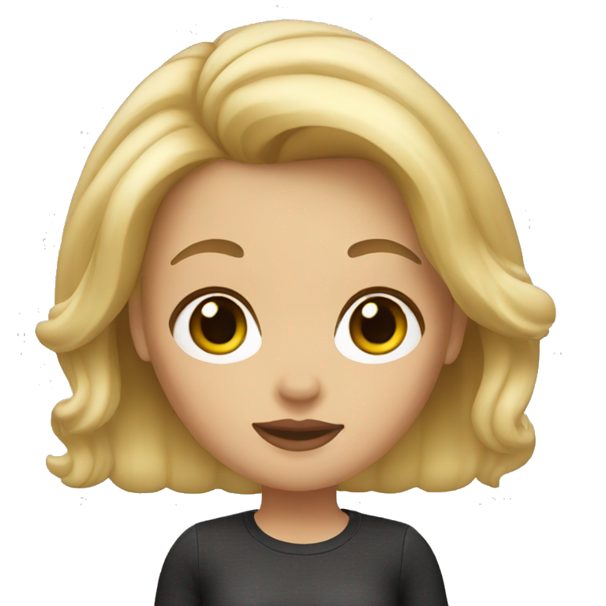
LisaIt was great! Sophia was so friendly, knowledgeable and took the time to talk me through the process and any worries. She was so easy to talk to and work with. She was super responsive and proactive. I enjoyed her sending a little process picture of my milk as she got it in the machine. I have already recommended her to people and will continue to do so!
Breast Milk Freeze-Drying FAQs
What is freeze-drying breast milk?
Freeze-drying breast milk is a process where water content is removed, allowing the milk to be stored in a lightweight, shelf-stable powder form for long-term use without refrigeration.
How long can freeze-dried breast milk last?
Freeze-dried breast milk can last for 3 years if stored in a cool, dry place, making it an excellent option for preserving milk for future use.
Does freeze-drying breast milk affect its nutrients?
No, freeze-drying preserves almost all of the nutrients, antibodies, and enzymes in breast milk, ensuring your baby receives the same benefits as fresh milk.
How do I rehydrate freeze-dried breast milk?
To rehydrate freeze-dried breast milk, simply add water to the powder in the ratio that I provide. Stir or shake to dissolve the powder, and it’s ready to feed to your baby.
Is the freeze-drying process safe?
Yes, the freeze-drying process is completely safe and is used for preserving food and nutrients across many industries. We ensure the highest standards of cleanliness and safety.
How much milk can I freeze-dry at a time?
You can freeze-dry as much breast milk as you'd like at a time. Our service offers flexibility to fit your storage and feeding needs.
Where are you located and how can I get my milk to you?
I work from my home in Spanish Fork, Utah County. You bring your frozen milk to my home, and when it's done you come back and pick up your powder here. Moms come from Provo, Orem, Springville, Payson, Lehi and all over Utah County. Message me and we'll set up drop-off and pickup times that work for you.
I'm not in Utah. Can I mail my milk to you?
Yes! Some moms have mailed their frozen milk to me. Shipping frozen milk takes a little planning to keep it frozen the whole way, so please message me for details before you send anything.
How much does breast milk freeze-drying cost?
Pricing is per ounce with a bulk discount, starting at $1.00 per ounce for up to 150 oz and going down to $0.65 per ounce for 2,000–4,000 oz. See the full pricing table, or message me and I'll get you a quote for the amount you have.
Hi, I'm Sophia
A happy mother, wife, and business owner
Sophia is the founder of PureMama Freeze-Drying, a breastmilk freeze-drying service dedicated to helping moms preserve the precious nutrients of their milk for longer. Realizing how challenging it can be to juggle breastfeeding with a busy life, freezer space, and the time constraints with fresh breastmilk, she launched PureMama Freeze-Drying. Her mission is to provide moms with an easy, safe, and convenient way to freeze-dry their milk, turning it into powder that can be stored for years, allowing families to enjoy the benefits and memories of breastfeeding long after the nursing period is over.
Ready to Freeze-Dry Your Milk?
Reach out for a quote or with any questions. I'm happy to help! Follow along on Instagram or Facebook for breast milk preservation tips.
puremamafreezedrying@gmail.com